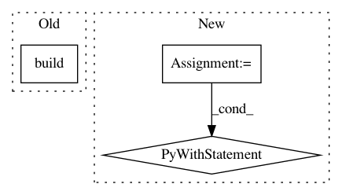

13aa31bc1a0b87d6c4b5e787c9b041ec83831c34,autokeras/blocks/reduction.py,SpatialReduction,build,#SpatialReduction#Any#Any#,106
Before Change
"global_avg"],
default="global_avg")
if reduction_type == "flatten":
output_node = Flatten().build(hp, output_node)
elif reduction_type == "global_max":
output_node = layer_utils.get_global_max_pooling(
output_node.shape)()(output_node)
elif reduction_type == "global_avg":
After Change
return output_node
if self.reduction_type is None:
reduction_type = hp.Choice(
REDUCTION_TYPE, [FLATTEN, GLOBAL_MAX, GLOBAL_AVG])
with hp.conditional_scope(REDUCTION_TYPE, [reduction_type]):
return self._build_block(hp, output_node, reduction_type)
else:
return self._build_block(hp, output_node, self.reduction_type)
def _build_block(self, hp, output_node, reduction_type):
In pattern: SUPERPATTERN
Frequency: 3
Non-data size: 3
Instances
Project Name: keras-team/autokeras
Commit Name: 13aa31bc1a0b87d6c4b5e787c9b041ec83831c34
Time: 2020-07-31
Author: jin@tamu.edu
File Name: autokeras/blocks/reduction.py
Class Name: SpatialReduction
Method Name: build
Project Name: quiltdata/quilt
Commit Name: 4682eeff2fcd01e7c56684e3d2b9e5f8ef37b26f
Time: 2018-01-17
Author: dima@gmail.com
File Name: compiler/quilt/test/test_import.py
Class Name: ImportTest
Method Name: test_multiple_package_dirs